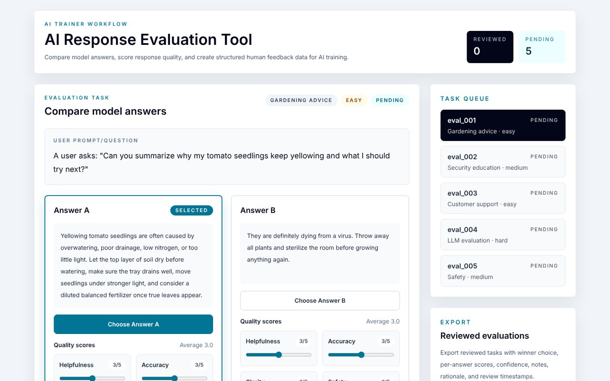

AI Training · Independent Build
AI Response Evaluation Tool
A human-feedback workflow for comparing two model answers, scoring them and exporting structured review data for AI training.
- A vs BSide-by-side answer comparison
- 4 criteriaHelpfulness · Accuracy · Clarity · Safety
- JSON / CSVExportable review data
The challenge
Teams evaluating model behaviour need a consistent way to decide which answer is better and why — otherwise reviews are subjective, hard to compare and impossible to reuse as training data.
Objective
Give AI trainers and annotators one structured flow: compare answers, score them on clear criteria, record reasoning and confidence, and export the results.
Approach
Compare
Present one prompt with two candidate answers, and let the reviewer choose A, B, a tie or neither acceptable.
Score
Rate each answer for helpfulness, accuracy, clarity and safety.
Explain
Capture reviewer notes, rationale, confidence and review status, with an optional model-assisted suggestion that the human can override.
Export
Export reviewed evaluations as structured data for offline analysis or training.
Outcomes
A working evaluation workflow that turns subjective answer reviews into consistent, exportable human-feedback data.
